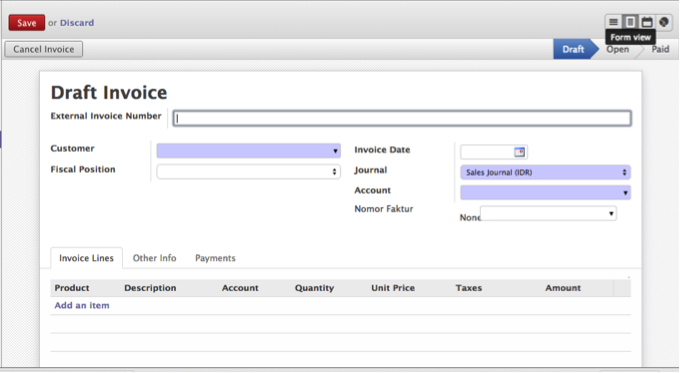
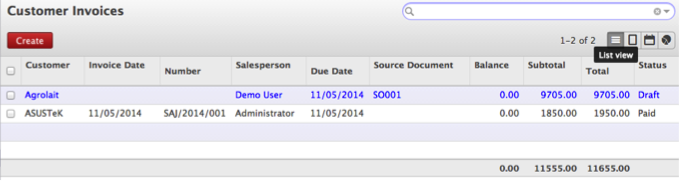
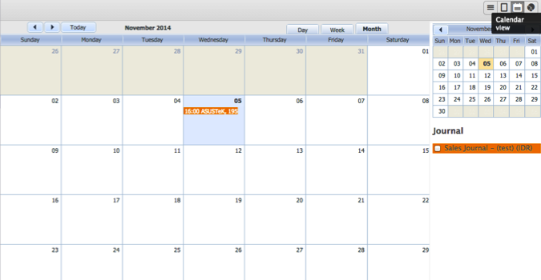
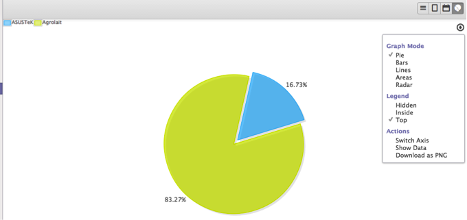
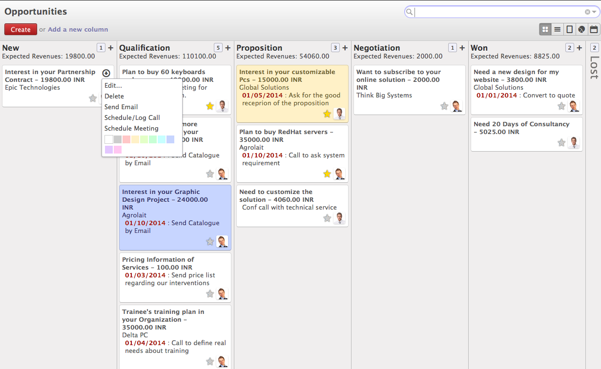
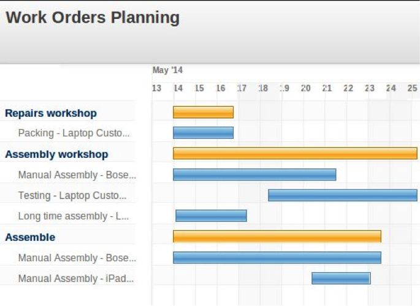
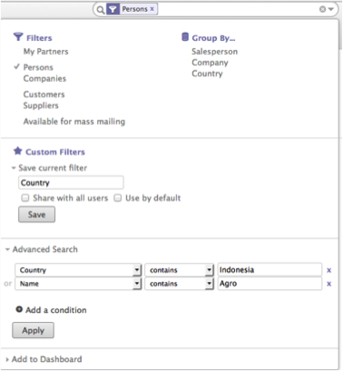
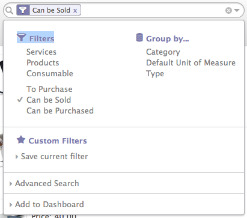
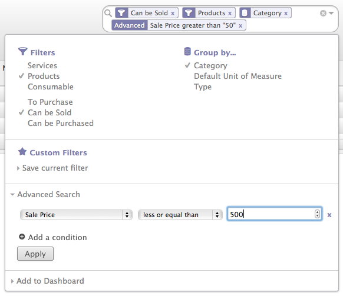

Tampilan Umum
Setelah user berhasil login ke dalam sistem, maka tampilan pertama kali yang akan muncul seperti gambar di bawah ini :

- Keterangan :
- Menu Utama, yang merupakan pembagian fungsi secara umum sesuai dengan kategori pekerjaan. Menu utama ini merupakan pintu masuk untuk melakukan kegiatan berikutnya.
- Search bar , yang merupakan area untuk melakukan pencarian sesuai yang relevan dengan fungsi dan akses dari seorang user.
- Pesan Umum, yang digunakan untuk mengirimkan pesan dan membaca pesan.
- Nama dan Foto, merupakan keterangan pengguna yang sedang login
- Sub Menu, merupakan turunan dari Menu Utama
- Working Area, tempat user bekerja dalam sistem.
Tampilan Form
Tampilan form digunakan untuk menampilkan data secara detail. seperti layaknya form pada kertas, tampilan ini digunakan untuk melakukan kegiatan dengan mengisi data-data yang diperlukan dalam 1 dokumen pekerjaan.
Tampilan List
Tampilan List (baris), digunakan untuk melihat keseluruhan data secara urutan. Pengguna bisa mengurutkan data sesuai dengan parameter yang diinginkan dengan mengklik parameter pada judul tampilan baris.
Tampilan Calendar
Calendar View, untuk menampilkan data dalam bentuk kalender
Tampilan Grafik
untuk menampilkan data dalam bentuk Grafik
Tampilan Kanban
untuk menampilkan data dalam bentuk Kanban
Tampilan Gantt Chart
untuk menampilkan data dalam bentuk Grafik Gantt
Tampilan Search
Selain mempunyai beberapa jenis view, Odoo 8 juga dilengkapi dengan fasilitas grouping dan filter yang terdapat pada search bar untuk mempermudah user dalam menganalisa data yang diinginkan.
- Filter.Fungsi Filter digunakan untuk menampilkan data yang diinginkan saja, sesuai dengan kategori yang dipilih.
- Group By. Fungsi Group By digunakan untuk menampilkan seluruh data namun dikelompokan berdasarkan kategori yang dipilih
- Custom Filter. Berfungsi sama dengan Filter, Custom Filter menampilkan data sesuai dengan kategori yang kita inginkan, sementara fungsi Filter pada point 1, kategorinya sudah ditentukan oleh sistem.
- Advance Search. Fitur ini berfungsi untuk melakukan pencarian data dengan beberapa kategori yang diinginkan.
Untuk melakukan filtering dan grouping dapat dilihat pada gambar berikut.
Filter
Masukkan kriteria pencarian ke dalam kotak pencarian selalu melakukan filter cepat . Beberapa dokumen telah didefinisikan Filter untuk menyaring data secara efektif . Seperti mencari untuk semua produk yang bisa dijual akan sulit untuk diturunkan dengan menggunakan filter muka . Semua kriteria pencarian dasar yang dapat didefinisikan sebagai filter selama pengembangan dan kita dapat menggunakan cepat dari pencarian sebelumnya . Untuk mendapatkan pencarian muka , klik panah bawah pada kotak pencarian muncul di sisi kanan . Pada klik yang Anda akan dapat melihat semua filter muka mungkin tersedia untuk produk .
Group By
Data dapat dikelompokkan dalam List , Kanban , atau Grup Views . Dalam pandangan Daftar Anda dapat memiliki fleksibilitas untuk memiliki tingkat terbatas pengelompokan sementara pandangan lain ada keterbatasan dengan pengelompokan . Pengelompokan diterapkan berdasarkan serangkaian klik dilakukan pada pilihan grup . Seperti antara dua kelompok pilihan Kategori dan Default Satuan Ukur Jenis tersedia tetapi akan berlaku pertama tergantung pada apa yang Anda pilih pertama
- Produk berdasarkan Kategori dan Default Unit Ukur Jenis - Jika Anda memilih pertama Kategori dan kemudian Standar Satuan Ukur Jenis
- Produk dengan default Unit Ukur Jenis dan Kategori - Jika Anda memilih Satuan default pertama Ukur Jenis dan kemudian Kategori
Dari gambar di atas " Apply Filter dan Grup " Anda dapat memahami bahwa kita memiliki memilih semua Produk Stock - bisa yang dapat dijual di Group by Kategori .
Advance Search
Untuk melakukan pencarian lebih maju yang tidak tersedia dengan Pencarian Cepat atau Filter seperti pilih produk yang dijual harga di antara 50 sampai 500. Kita bisa melakukan semacam ini pencarian dengan pencarian muka dan menyelamatkan mereka menggunakan bintang pilihan pencarian muka . Ketika bekerja dengan pencarian muka kita dapat mendefinisikan operator dan kondisi pencarian antara dua kondisi . Jika Anda menambahkan lebih dari satu kondisi dalam pencarian tunggal itu selalu diperlakukan dengan operator OR
Jadi, Jika Anda ingin menerapkan operator AND saat bekerja dengan Advance Search apply dan lakukan Advance Search kembali.
